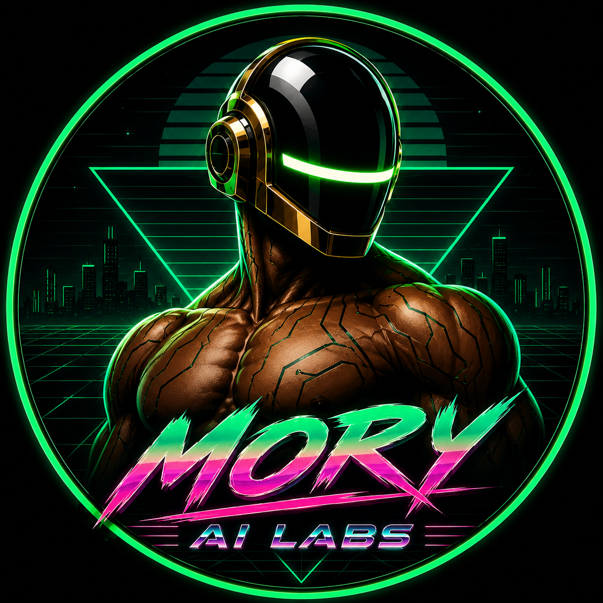
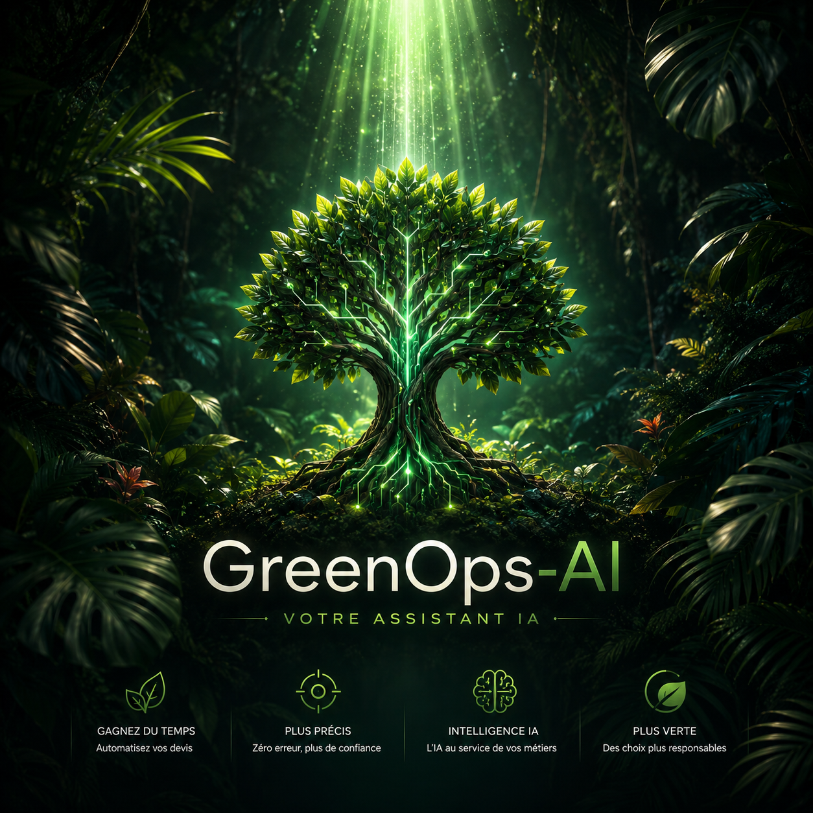

Intelligence Artificielle
Sur-Mesure & Souveraine.

Nos Produits & Innovations

ArboResilience — Sécurisez vos plantations face au climat
Évitez les pertes financières massives sur vos reboisements et aménagements urbains. Notre IA croise projections climatiques (GIEC CMIP6), topographie et stress hydrique pour certifier la viabilité de vos essences à horizon 2050–2100.
GreenOps AI — Vos devis paysagers en 30 secondes chrono
Ne perdez plus vos soirées à chiffrer à la main. Téléchargez une photo de terrain ou un plan : l'IA calcule les métrés, sélectionne les fournitures au juste prix et édite un devis commercial conforme prêt à signer.

L'Ingénierie IA au service de vos Gains Métiers
Nous transformons vos flux de données et vos processus manuels en systèmes intelligents autonomes et ultra-performants.
Agents Autonomes & Copilotes
Conception d'agents IA intelligents capables de raisonner, d'analyser des documents complexes, de manipuler vos outils et d'automatiser des flux entiers sans intervention humaine.
Machine Learning & Prédictif
Entraînement de modèles statistiques et algorithmes avancés sur vos données propriétaires pour anticiper les risques, optimiser vos coûts et prédire vos tendances critiques.
Architectures Data & Cloud
Pipelines ETL/ELT robustes, vector databases, APIs FastAPI scalables et conteneurisation Docker pour un passage en production sécurisé et souverain.
Notre Méthodologie Agile
Audit & Prototypage (S1-S2)
Immersion dans vos opérations, cartographie de vos flux de données et livraison d'un PoC (Proof of Concept) fonctionnel en 10 jours.
Entraînement & Architecture
Développement des pipelines de données, fine-tuning des modèles sur vos règles métiers et tests rigoureux de précision.
Déploiement & Suivi ROI
Mise en production sécurisée avec monitoring continu, dashboards d'observabilité et formation de vos équipes.
Accélérez votre avantage concurrentiel avec l'IA.
Que vous ayez un cas d'usage précis ou un flux opérationnel à automatiser, nos ingénieurs cadrent votre solution sous 48h.